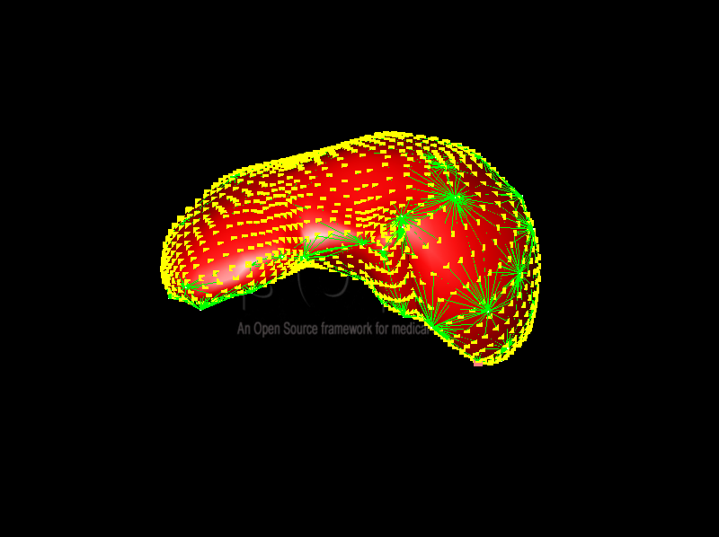
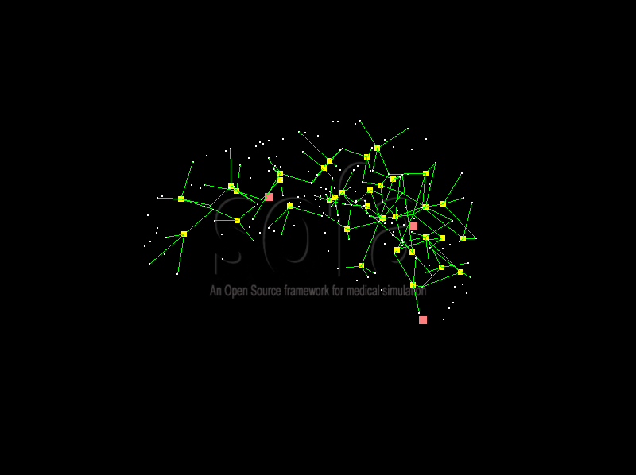

Barycentric Mapping

Unlike RigidMapping, Barycentric Mapping can be used to attach points to a deformable body. The attached body coordinates are defined using the barycentric coordinates with respect to the parent cells. The parent cells are defined by the topology associated with the body points. Many topologies components exist in Sofa to describe the organisation of a point set, like TetrahedronSetTopologyContainer, HexahedronSetTopologyContainer, RegularGridTopology. The most common use of Barycentric Mapping in Sofa is to attach a visual model or a collision model to an underlying behaviour model.
In the TutorialMappingLiverBarycentric scene, you get the following elements :
- A node "Liver" containing the behavior model of a liver loaded through a MeshLoader component with a TetrahedronTopology and a TetrahedralCorotationalFEMForceField to handle the deformations.
- A node "Visual" which is mapped to the "Liver" node by a barycentric mapping, which contains the visual representation of our liver
- A node "Surf" mapped to the "Liver" node by a barycentric mapping, containing the collision model of the liver.
In the scene you actually have two kinds of barycentric mappings. A visual barycentric mapping, and a mechanical barycentric mapping.
-
The visual barycentric mapping concerns the "Visual" node (child) and the "Liver" node (parent). Here the communication between the parent and the child is one way only. At each time step, the positions of the child are updated knowing the positions and the velocities of the parent and according to the barycentric weights.
 Mapping of a visual model to a behaviour model with a barycentric mapping. -
The mechanical barycentric mapping concerns the "Surf" node (child) and the "Liver" node (parent). It is this mapping which actually allows you to interact with the object using the mouse. Here the communication works in both ways. Like in a visual mapping, the child positions and velocities are updated knowing their barycentring weights and the parent state vector. On top of that, the interactions (or forces) computed at the level of the child are propagated back to the parent according to the barycentric weights.
 Collision Model (yellow squares) mapped to the behaviour model (white dots) with a tetrahedral topology
You can interact with the mouse to see how the two barycentric mappings work together in the scene.
- With the mouse interaction you can accumlate forces at the level of the collision mechanical object in the "Surf" node. These forces are propagated back at the level of the "Liver" node using the barycentric mechanical mapping.
- The forces computed at the level of the behaviour model - the "Liver" node - create a motion, our liver object now moves. In the "Visual" node the visual model now moves in a consistent way with respect to the behaviour model position and velocities, thanks to the barycentric mapping.